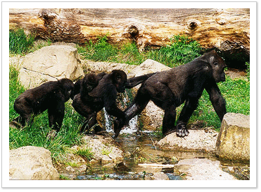

Gorillaberg
58 Meter über dem Meeresspiegel erhebt sich der Gorillaberg. Zehn Gorillas
leben hier in einer 7.500 qm großen, spektakulären Urwaldlandschaft. In
Felsen eingelassene Panoramafenster geben den Blick frei auf eine
traumhafte Natur-Kulisse. Am Fuße des Berges haben Gibbons, die kleinsten
Menschenaffen, ihr Revier auf einer grünen Insel bezogen. Tipp: Morgens
besingen die Gibbons ihr Revier! Die ungewöhnlichen Arien sind dann im
ganzen Zoo zu hören.
zurück zur Hauptseite